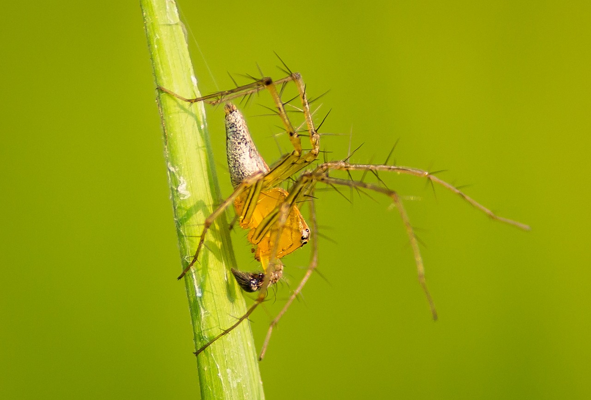
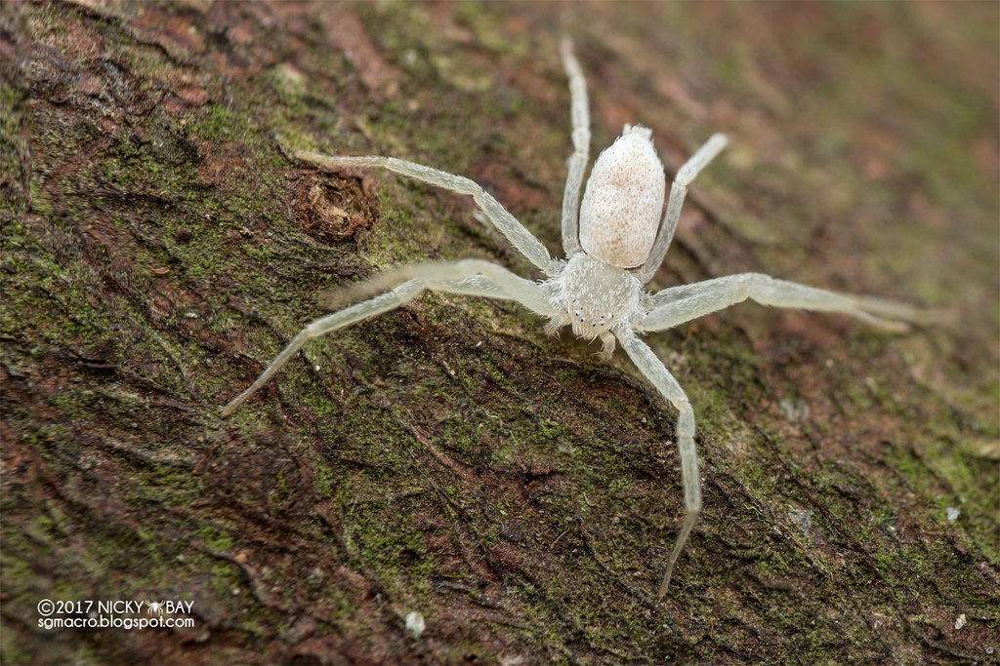
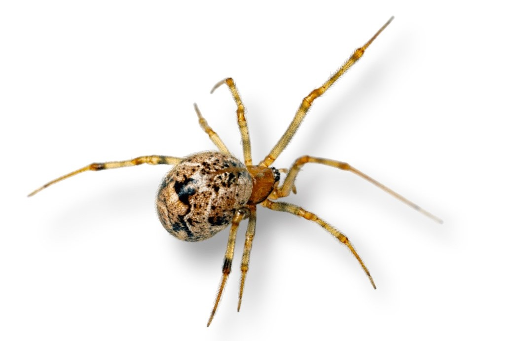
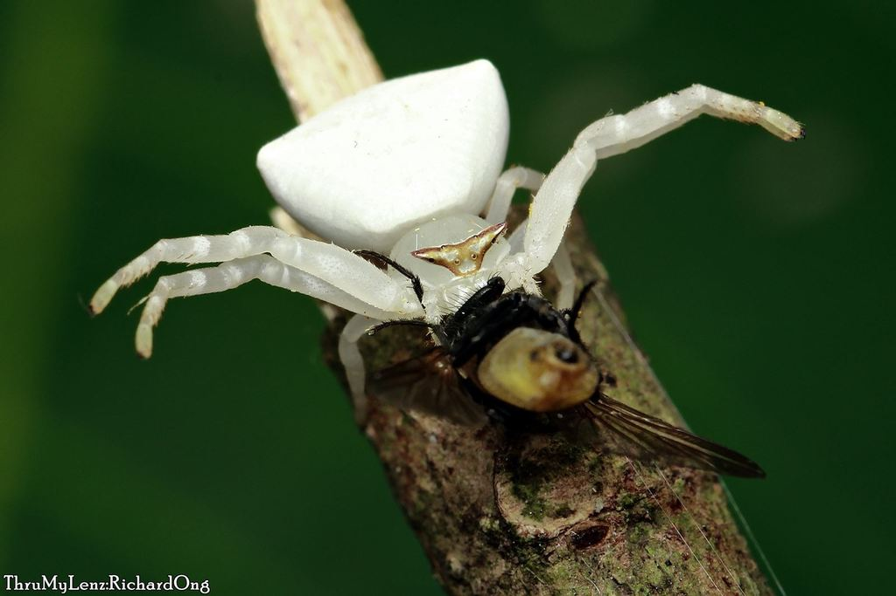

Jumping Spider

Familyname: Salticidae
Commonname: jumpingspider
Genus:carrhotus
Species: C.viduus
Sex: Male
Jumping spiders, members of the Salticidae family, represent the largest group of spiders, encompassing over 600 genera and more than 6,000 species, accounting for 13% of all spider species. These spiders are distinguished by their exceptional vision, which surpasses that of most arthropods. They utilize this acute vision for various activities such as courtship, hunting, and navigation. Typically moving in a slow, inconspicuous manner, jumping spiders are capable of executing highly agile leaps, especially during hunting or when evading threats. This ability also aids them in traversing large gaps. They have a well-developed respiratory system, featuring both book lungs and a tracheal system, enabling bimodal breathing. A key identifying feature of jumping spiders is their eye arrangement. They possess four pairs of eyes, with the front center pair being notably large. This unique eye pattern is a hallmark of their identification, contributing to their excellent visual capabilities.
Orb-weaver Spider

Familyname: Salticidae
Commonname: jumpingspider
Genus: carrhotus
Species: C.viduus
Sex: Female
Orb-weaver spiders, part of the Araneidae family, are famed for their intricate, circular, spiral webs commonly seen in various environments such as gardens, fields, and woodlands. The term "orb" reflects the circular design of their webs. These spiders are characterized by having eight similar eyes, legs that may be either hairy or spiny, and they lack stridulating (sound-producing) organs. Globally distributed, the Araneidae family is among the largest spider families, with 3,108 species spanning 186 genera, sharing prominence with families like Salticidae and Linyphiidae. Notable for their size or striking colors, araneids are often the quintessential garden spiders. Their web construction follows a precise pattern, starting with a non-sticky silk frame before adding a final spiral of sticky silk for capturing prey.
Velvet Spider

Familyname: Salticidae
Commonname: jumping spider
Genus:Cyrba
Species:C. ocellata
Sex: Male
Cyrba ocellata is a species of jumping spider found in various parts of Asia, including India, Sri Lanka, China, and Indonesia. Here's a concise description: Cyrba ocellata is recognized for its striking appearance and agile movements typical of jumping spiders. These spiders have relatively large eyes, providing them with excellent vision for hunting prey and navigating their environment. Their coloration is often a mix of black, white, and shades of brown, with distinct markings and patterns that may vary slightly among individuals. As with other jumping spiders, Cyrba ocellata possesses powerful hind legs adapted for leaping considerable distances to capture prey or evade predators. They are commonly found in vegetation-rich habitats, where they hunt small insects and other arthropods.
Wolf Spider

Familyname:
Commonname:
Genus:
Species:
Sex:
Wolf spiders, belonging to the family Lycosidae, derived from the Ancient Greek word for wolf, are recognized for their robust and agile nature, alongside remarkable eyesight. These solitary hunters are known for their unique hunting strategies, which do not involve the use of webs. Instead, they either ambush their prey, utilizing elements of surprise and short bursts of speed, or wait for unsuspecting prey near their burrows, showcasing their adaptability in various hunting techniques. Distinguishing wolf spiders from similar species, such as nursery web spiders (family Pisauridae), can be done by observing how they carry their egg sacs. Wolf spiders attach their egg sacs to their spinnerets located at the end of their abdomen, in contrast to Pisauridae, which carry theirs with their mouthparts and front limbs. Furthermore, wolf spiders have two notably large eyes among their eight-eye arrangement, making them stand out from nursery web and grass spiders, whose eyes are more uniformly sized. This distinctive eye pattern is a key identification feature of wolf spiders, reflecting their keen hunting capabilities.
Lynx Spider
Familyname:
Commonname:
Genus:
Species:
Sex:
The lynx spider family, Oxyopidae, was first categorized by Tamerlan Thorell in 1870 and consists of araneomorph spiders. Unlike many other spiders, the majority of lynx spider species do not rely heavily on webs for survival. Instead, they adopt a predatory lifestyle, actively hunting on plant surfaces. These spiders are especially known for their presence around flowers, where they employ ambush tactics to capture pollinators, similar to the hunting strategies of crab spiders. Lynx spiders are also notable for their relatively high tolerance of conspecifics, with certain species even demonstrating social behaviors. This tolerance and social interaction are uncommon traits among spiders, highlighting the unique aspects of the Oxyopidae family's ecology and behavior.
Running Carp Spider
Familyname:
Commonname:
Genus:
Species:
Sex:
The Philodromidae family, often referred to as philodromid crab spiders or running crab spiders, was initially identified by Tord Tamerlan Teodor Thorell in 1870, at that time classified as the subfamily Philodrominae within the Thomisidae family. This group now encompasses over 500 species across thirty genera. Among the most prevalent genera within this family is Philodromus, known for its wide distribution and similarities to the genus Ebo. Other notable genera include Tibellus, characterized by its elongated body adapted for life in grassy areas, and Thanatus, which is also widespread and includes species like the house crab spider, frequently found preying on flies within and around human constructions. These spiders are distinguished by their agility and hunting techniques, which do not rely on webs, setting them apart from other spider families.
Cobweb Spider
Family name:
Common name:
Genus:
Species:
Sex:
The Theridiidae family, commonly known as tangle-web, cobweb, or comb-footed spiders, was first recognized by Carl Jakob Sundevall in 1833. This extensive family, found worldwide, comprises over 3,000 species across 124 genera, making it the most frequently encountered arthropod in human homes globally. Characterized by their unique web-making abilities, theridiid spiders produce sticky silk for capturing prey, unlike the woolly silk spun by others. They feature a distinctive comb on the fourth leg, comprised of serrated bristles, aiding in their silk manipulation.
Crab Spider
Familyname:
Commonname:
Genus:
Species:
Sex:
The Thomisidae family, known broadly as crab spiders, encompasses approximately 170 genera and more than 2,100 species. While the term "crab spider" is commonly associated with this family, it is also used to describe various other spider families. A significant number of Thomisidae species are referred to as flower spiders or flower crab spiders due to their frequent presence in floral environments.